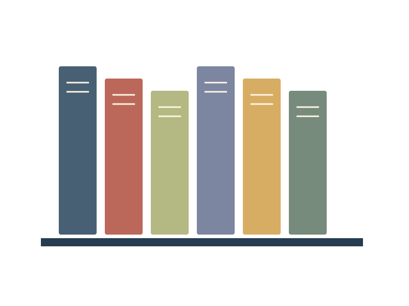

Something to notice
Nature writing rewards a short walk and a second look at a familiar place.
OutsideA small reading room for curious people. Browse subjects, save a reading list and make a plan that fits the time you have.

Nature writing rewards a short walk and a second look at a familiar place.
OutsideAn essay can introduce an idea without asking you to agree with it.
IdeasA practical guide belongs near the tools, with a pencil to mark what you tried.
Practice